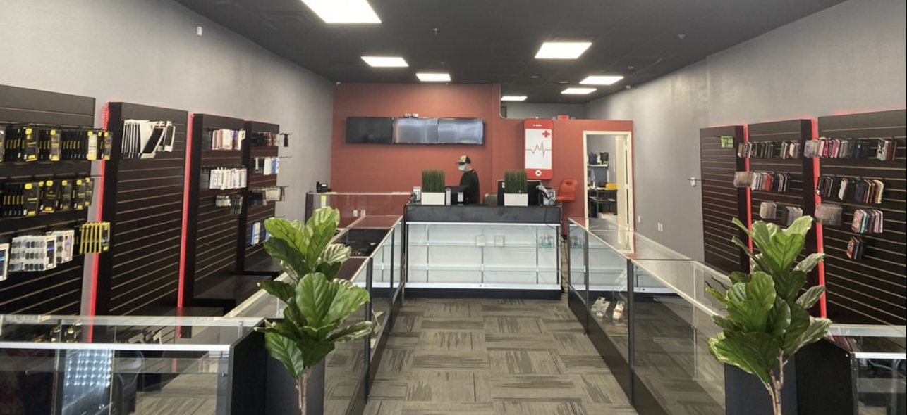

Phones
Screens, batteries, ports, cameras, and water damage. Current and older iPhones and Samsung devices.
Ask about your deviceCRAIG ROAD · WALK-INS WELCOME
Walk-in screen and battery work at 2777 W Craig Rd Ste. 102. Most jobs finish in 30 to 60 minutes when the part is on the shelf.
WHAT WE FIX
Screens, batteries, ports, cameras, and water damage. Current and older iPhones and Samsung devices.
Ask about your deviceTablet glass and touchscreens. Laptop screens, keyboards, diagnostics, and storage upgrades.
Ask about your deviceCrash damage, gimbals, motors, batteries, and flight checks.
Ask about your deviceVisit iPhone Doctor on Craig Road for phones, tablets, computers, and drones.
Walk in, talk through the issue, and get a price before work begins.

REPAIR QUESTIONS
Usually 30–60 minutes for screens and batteries when parts are stocked.
Yes. Current and older iPhone models are supported.
Walk-ins welcome. Call ahead to check parts.
Before work begins. Repairs start after your approval.
CRAIG ROAD
2777 W Craig Rd, Ste 102
North Las Vegas, NV 89032
Monday–Saturday: 10am–7pm
Sunday: Closed
Front parking and wheelchair access.